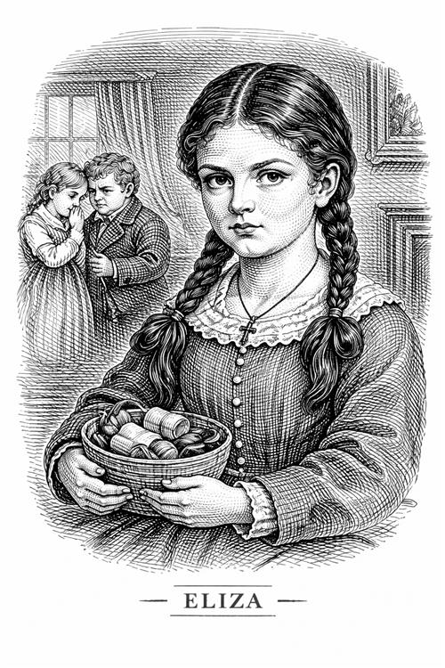

Eliza Reed

Eliza es la prima mayor de Jane. A diferencia de su hermana Georgina, es una persona muy fría y pragmática.
Personalidad e impacto en la vida de Jane
Eliza es extremadamente tacaña, calculadora y egocéntrica. Desde pequeña se hace notable que lo único que le importa y que los sentimientos no son una de sus prioridades.
Cuando Jane vuelve años más tarde a Gateshead a ver a su tía, la cual está muriendo, Eliza ahora es cortés con ella pero sigue siendo muy distante y fría. A pesar de ver cómo se avecina la muerte de su madre, no siente pena por ella, solo quiere cerrar los asuntos pendientes y marcharse a casa.
A diferencia de su prima, Eliza no perdona a su madre en su lecho de muerte, se siente resentida por haber tenido que dedicar su vida a cuidarla mientras los demás se iban a vivir su vida.
Importancia del personaje
Eliza es importante porque representa el lado más frío y calculador de la familia Reed. La autora la usa para mostrar un contraste entre ella y su hermana Georgina, toda emocional. Jane al ver a las dos, decide que no puede regirse solo por sus sentimientos (como Georgina), ni ser tan calculadora (como Eliza), tiene que buscar un equilibrio.
Al final de la historia, Eliza acaba en un convento de Francia como abadesa, siendo esto la máxima expresión de orden y rutina que tanto la caracterizan.